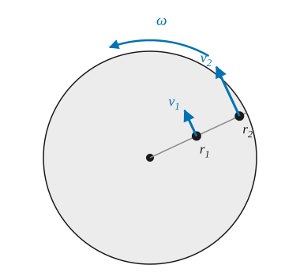

← 목차
선변수와 각변수 (relating the linear and angular variables)
회전축에서 거리
인 점은 반지름
인 원을 그린다. 원판이
만큼 돌면 그 점은 호
(10.3.1)만큼 움직인다.
(10.3.2)
원판의 모든 점은 같은 시간에 같은 각만큼 돌아
가 같다. 그래서 선속력
는
에 비례한다.
가속도는 접선 성분
(10.3.6)과 지름 성분
(10.3.7)로 나뉜다.
